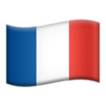

I love politic, guitar and video games. I have a project to make an ASMR application that links relaxation to sleep called Brill 🎧.
Below this link to see my 1 minute video explaining the concept of my app in French  :)
I am really passionate about the world of politics, and by the way, I have already been in politic : I was named 24th co-lister on an electoral list during the 2020 municipal elections in Paris, and thus, I have been recognized as the youngest co-lister in France.
I really like the guitar, because it's a bit of a way to express myself without using words, and I've been doing it for 7 years.
I have loved video games since I was little. I've been playing games like League of Legends or Rocket League a lot for 4 years, this time it's a bit of a way for me to escape and de-stress. By the way, I train in order to have a sufficient level to be able to start competitions (of course it's still a passion 😅)